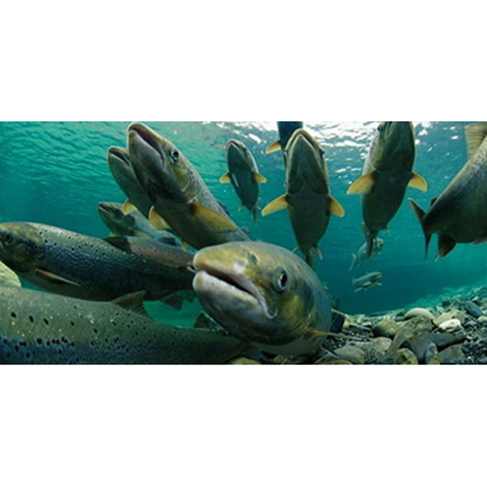

Ikan Salmon
Salmon adalah sejenis ikan laut dari famili Salmonidae. Ikan lain yang satu famili dengan salmon adlaah ikan trout. Perbedaannya adalah pada migrasi hidup salmon dibandingkan dengan ikan trout yang menetap. Salmon hidup di Samudra Atlantik dan Samudra Pasifik.
Secara umum, salmon adalah spesies anadromous, yaitu spesies yang bermigrasi untuk berkembang biak. Salmon lahir di perairan air tawar, bermigrasi ke laut, lalu kembali ke air tawar untuk bereproduksi. Ada kepercayaan bahwa salmon selalu kembali ke tempat ia dilahirkan untuk berkembang biak. Penelitian menunjukkan demikian, namun mengapa hal itu terjadi dan bagaimana salmon dapat menyimpan memori tersebut masih merupakan misteri.
Kandungan Ikan Salmon (dalam 100 gram)
| Protein (g) | Kalori (Kal) | Lemak (g) | Besi (mg) | Kalsium (mg) | Fosfor (mg) | Vit A (SI) | Vit B1 (mg) | Air (gr) | BDD (%) |
|---|---|---|---|---|---|---|---|---|---|
| 20 | 208 | 13 | 0,3 | 9 | 0 | 50 | 3,2 |
Manfaat Ikan Salmon
- Meningkatkan fungsi otak dan kecerdasan
- Peningkatan Mood dan Kognisi
- Merawat Mata
- Kesehatan Jantung
- Kulit Sehat
Asam lemak omega-3 meningkatkan efisiensi fungsi otak, meningkatkan daya ingat dan membuatnya tetap aktif selama jam kerja yang panjang. Seiring dengan asam amino, vitamin A, vitamin D, dan selenium, asam lemak ini melindungi sistem saraf dari kerusakan yang terkait dengan penuaan, bertindak sebagai antidepresan, melemaskan otak dan juga membantu dalam mengobati penyakit Alzheimer dan Parkinson. Mungkin itu sebabnya pemakan ikan seharusnya lebih cerdas dari pada pemakan daging.
Banyak peneliti menganggap DHA sebagai lemak paling penting yang ditemukan di otak manusia, dan konsentrasi asam lemak omega 3 yang tidak biasa dalam salmon ini membantu menjelaskan manfaat mendokumentasikan salmon dan asupan ikan omega-3 untuk pemikiran dan penurunan risiko. Masalah otak tertentu yang menyertai konsumsi ikan omega-3. Asupan omega-3 dan omega-3 mengandung ikan dikaitkan dengan penurunan risiko depresi, penurunan risiko permusuhan pada beberapa penelitian remaja, dan penurunan risiko penurunan kognitif pada orang lanjut usia. Beberapa penelitian telah menunjukkan hubungan antara asupan IQ dan omega-3, dan juga antara IQ dan asupan ikan omega-3. Yang menarik di daerah asupan ikan, DHA, dan fungsi otak ini adalah penemuan protin yang relatif baru. Protectins adalah senyawa khusus yang dibuat dari DHA dan penelitian pendahuluan telah menunjukkan bahwa mereka memiliki peran yang berpotensi penting sebagai molekul peraturan antiinflamasi, terutama bila diproduksi oleh jaringan saraf. (Saat protin diproduksi oleh jaringan saraf, mereka biasanya disebut “neuroprotectins.”) Periset telah menduga bahwa setidaknya beberapa manfaat terkait otak dari asupan ikan omega-3 mungkin karena konversi DHA pada ikan ini untuk melindunginya. yang bisa membantu mencegah peradangan berlebihan.
Asupan omega-3 dan konsumsi ikan omega-3 dikaitkan dengan penurunan risiko dua masalah yang berkaitan dengan mata: degenerasi makula dan mata kering kronis. Dalam kasus degenerasi makula (masalah mata kronis di mana bahan di bagian tengah retina di bagian belakang bola mata mulai memburuk dan menyebabkan hilangnya penglihatan), dua porsi ikan per minggu adalah jumlah yang telah ditunjukkan secara signifikan. mengurangi risiko Untuk mengurangi risiko mata kering kronis, jumlah asupan ikan omega-3 yang cukup tinggi (2-4 porsi per minggu) adalah jumlah minimum yang dibutuhkan, dengan porsi 5-6 mingguan menunjukkan penurunan risiko yang lebih besar. Seperti studi otak tentang asupan ikan omega-3, studi mata kering mulai terlihat secara khusus pada neuroprotectins yang dibuat dari DHA pada ikan salmon dan ikan omega-3 lainnya. Molekul turunan omega-3 ini dapat membantu mencegah mata kering kronis dengan menurunkan tingkat latar belakang peradangan di mata.
Menjadi kaya akan asam lemak omega-3, secara teratur mengonsumsi ikan salmon dapat membantu mengurangi peradangan sistemik dan risiko pengembangan aterosklerosis, hipertensi dan stroke. R egarding dosage, sebuah studi yang diterbitkan oleh School of Medicine and Pharmacology (Universitas Western Australia) melaporkan: “Otoritas kesehatan saat ini merekomendasikan asupan setidaknya dua makanan ikan berminyak per minggu untuk populasi umum yang setara dengan sekitar 500 mg per hari asam eicosapentaenoic dan asam docosahexaenoic [dua asam lemak omega-3 utama]. Pada pasien dengan penyakit jantung koroner, pedoman merekomendasikan 1 g suplemen harian dan pada pasien hipertrigliseridemia sampai 4 g per hari. “
Karena kadar omega-3 yang luar biasa, mengkonsumsi ikan salmon yang ditangkap liar dapat membantu memberikan kulit yang bercahaya dan lebih kenyal. Selain itu, antioksidan karotenoid astaxanthin yang ditemukan pada salmon dapat sangat mengurangi efek kerusakan radikal bebas , yang menyebabkan penuaan. Dr Perricone, MD, dermatolog terkenal di dunia, merekomendasikan pasiennya mengkonsumsi salmon yang ditangkap liar tiga kali seminggu untuk mendapatkan kulit yang lebih bercahaya.